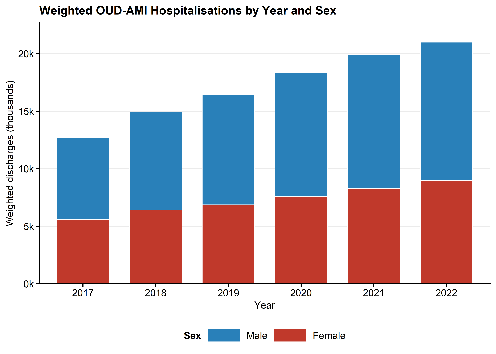
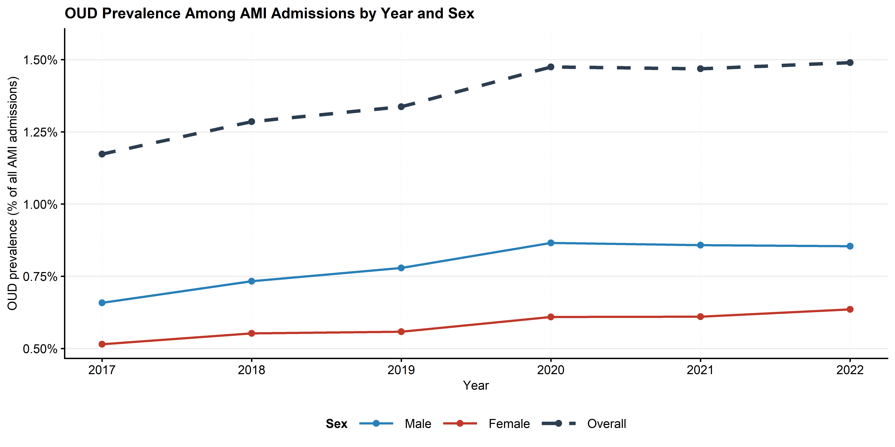
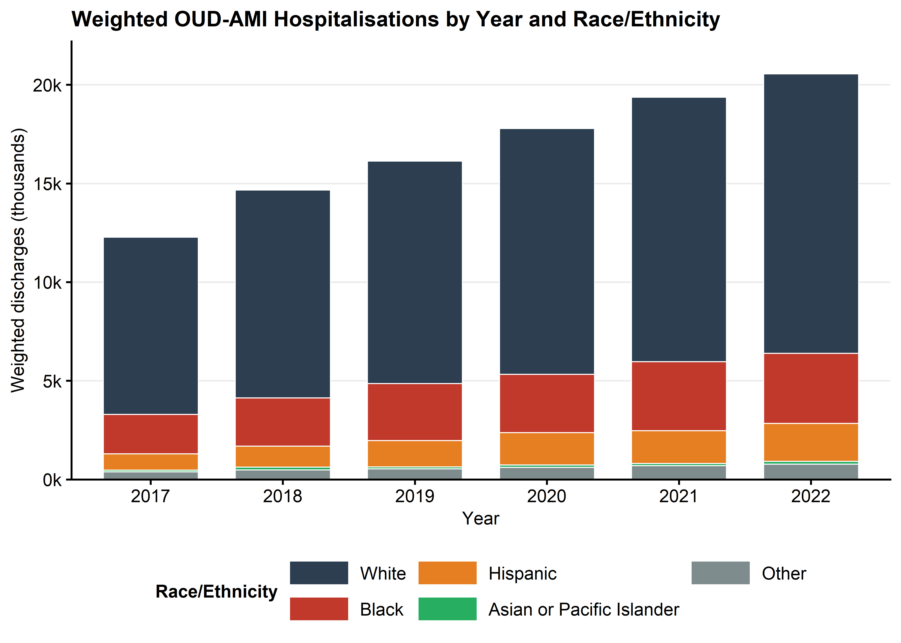
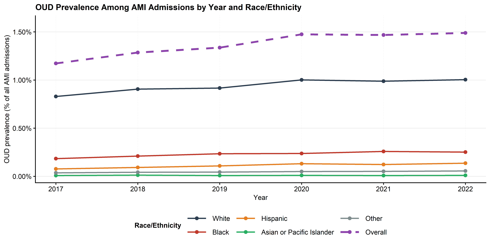
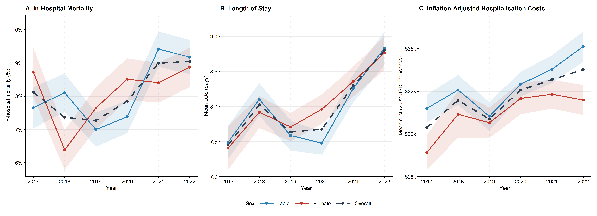
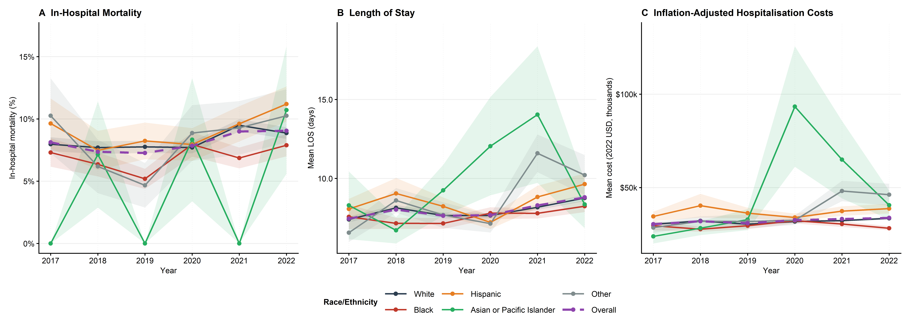

![]()
| Characteristic | Overall N = 103,3551 |
Male N = 59,6751 |
Female N = 43,6801 |
p-value2 |
|---|---|---|---|---|
| Age, years (continuous) | 58 (14) | 56 (14) | 60 (14) | <0.001 |
| Race/Ethnicity | <0.001 | |||
| White | 70,805 (70%) | 38,810 (67%) | 31,995 (75%) | |
| Black | 17,325 (17%) | 11,140 (19%) | 6,185 (15%) | |
| Hispanic | 8,455 (8.4%) | 5,595 (9.6%) | 2,860 (6.7%) | |
| Asian or Pacific Islander | 695 (0.7%) | 410 (0.7%) | 285 (0.7%) | |
| Other | 3,510 (3.5%) | 2,195 (3.8%) | 1,315 (3.1%) | |
| Year (continuous) | 0.4 | |||
| 2017 | 12,705 (12%) | 7,130 (12%) | 5,575 (13%) | |
| 2018 | 14,940 (14%) | 8,520 (14%) | 6,420 (15%) | |
| 2019 | 16,440 (16%) | 9,575 (16%) | 6,865 (16%) | |
| 2020 | 18,350 (18%) | 10,770 (18%) | 7,580 (17%) | |
| 2021 | 19,915 (19%) | 11,635 (19%) | 8,280 (19%) | |
| 2022 | 21,005 (20%) | 12,045 (20%) | 8,960 (21%) | |
| Median Household Income Quartile (by ZIP) | <0.001 | |||
| Q1 | 39,100 (39%) | 22,600 (39%) | 16,500 (39%) | |
| Q2 | 25,865 (26%) | 14,235 (25%) | 11,630 (27%) | |
| Q3 | 21,815 (22%) | 12,590 (22%) | 9,225 (22%) | |
| Q4 | 13,525 (13%) | 8,140 (14%) | 5,385 (13%) | |
| Primary Expected Payer | <0.001 | |||
| Medicare | 48,090 (47%) | 24,635 (41%) | 23,455 (54%) | |
| Medicaid | 32,910 (32%) | 20,115 (34%) | 12,795 (29%) | |
| Private | 13,645 (13%) | 8,665 (15%) | 4,980 (11%) | |
| Self-pay/Uninsured | 5,655 (5.5%) | 3,990 (6.7%) | 1,665 (3.8%) | |
| Other | 3,055 (3.0%) | 2,270 (3.8%) | 785 (1.8%) | |
| AMI Type | <0.001 | |||
| NSTEMI | 47,340 (83%) | 27,280 (80%) | 20,060 (86%) | |
| STEMI | 9,995 (17%) | 6,635 (20%) | 3,360 (14%) | |
| Hospital Region | <0.001 | |||
| Northeast | 21,185 (20%) | 13,960 (23%) | 7,225 (17%) | |
| Midwest | 18,785 (18%) | 10,975 (18%) | 7,810 (18%) | |
| South | 38,230 (37%) | 21,285 (36%) | 16,945 (39%) | |
| West | 25,155 (24%) | 13,455 (23%) | 11,700 (27%) | |
| Hospital Bed Size | 0.2 | |||
| Large | 53,065 (51%) | 30,965 (52%) | 22,100 (51%) | |
| Medium | 30,395 (29%) | 17,425 (29%) | 12,970 (30%) | |
| Small | 19,895 (19%) | 11,285 (19%) | 8,610 (20%) | |
| Hospital Location & Teaching Status | <0.001 | |||
| Urban, teaching | 78,335 (76%) | 46,615 (78%) | 31,720 (73%) | |
| Rural | 7,015 (6.8%) | 3,510 (5.9%) | 3,505 (8.0%) | |
| Urban, non-teaching | 18,005 (17%) | 9,550 (16%) | 8,455 (19%) | |
| Admission Type | 0.055 | |||
| Non-elective | 100,170 (97%) | 57,970 (97%) | 42,200 (97%) | |
| Elective | 3,040 (2.9%) | 1,640 (2.8%) | 1,400 (3.2%) | |
| Elixhauser Comorbidity Index (score) | 5.94 (2.24) | 5.76 (2.25) | 6.19 (2.20) | <0.001 |
| Congestive Heart Failure | 50,980 (49%) | 29,495 (49%) | 21,485 (49%) | 0.7 |
| Hypertension | 71,920 (70%) | 41,280 (69%) | 30,640 (70%) | 0.14 |
| Diabetes Mellitus (Type 1 or 2) | 31,840 (31%) | 18,000 (30%) | 13,840 (32%) | 0.020 |
| Chronic Kidney Disease | 24,610 (24%) | 14,370 (24%) | 10,240 (23%) | 0.3 |
| Chronic Lung Disease | 39,850 (39%) | 19,850 (33%) | 20,000 (46%) | <0.001 |
| Obesity | 18,155 (18%) | 9,330 (16%) | 8,825 (20%) | <0.001 |
| Peripheral Vascular Disease | 10,315 (10.0%) | 6,050 (10%) | 4,265 (9.8%) | 0.4 |
| Liver Disease | 17,525 (17%) | 11,065 (19%) | 6,460 (15%) | <0.001 |
| Dyslipidemia / Hyperlipidemia | 38,840 (38%) | 22,445 (38%) | 16,395 (38%) | >0.9 |
| Smoking | 60,270 (58%) | 36,810 (62%) | 23,460 (54%) | <0.001 |
| Atrial Fibrillation | 16,980 (16%) | 10,090 (17%) | 6,890 (16%) | 0.028 |
| Prior Myocardial Infarction | 11,455 (11%) | 7,100 (12%) | 4,355 (10.0%) | <0.001 |
| Prior Revascularization (PCI or CABG) | 12,595 (12%) | 8,445 (14%) | 4,150 (9.5%) | <0.001 |
| Alcohol Use Disorder | 13,600 (13%) | 10,175 (17%) | 3,425 (7.8%) | <0.001 |
| Tobacco Use Disorder | 60,230 (58%) | 36,795 (62%) | 23,435 (54%) | <0.001 |
| Cocaine Use Disorder | 13,180 (13%) | 9,500 (16%) | 3,680 (8.4%) | <0.001 |
| Psychiatric Disorder | 24,695 (24%) | 12,240 (21%) | 12,455 (29%) | <0.001 |
| Other Non-Opioid Substance Use Disorder | 14,110 (14%) | 8,840 (15%) | 5,270 (12%) | <0.001 |
| 1 Mean (SD); n (%) | ||||
| 2 Design-based KruskalWallis test; Pearson’s X^2: Rao & Scott adjustment | ||||
Temporal Trends in Acute Myocardial Infarction Outcomes Among Patients With Opioid Use Disorder: An Analysis of Sex and Racial Disparities Using the Nationwide Inpatient Sample (2017–2022)
Analysis for RCOP NIS Cardio-3
Preamble
Reference Studies:
Study Objective:
To characterise national trends in acute myocardial infarction (AMI) hospitalisations among patients with opioid use disorder (OUD) from 2017 to 2022 using ICD-10 data, spanning the transition through the opioid epidemic’s third and fourth waves. Specifically, this study (1) determines temporal trends in in-hospital outcomes (mortality, cardiogenic shock, cardiac arrest, acute kidney injury, mechanical ventilation, and PCI utilisation) among OUD-AMI hospitalisations; (2) characterises trends in length of stay and inflation-adjusted hospitalisation costs; (3) examines sex-based disparities in outcomes and hospitalisation patterns; and (4) identifies racial/ethnic disparities in outcomes among OUD-AMI patients.
Data Source:
Retrospective cross-sectional analysis of the Nationwide Inpatient Sample (NIS), 2017–2022, developed by AHRQ through HCUP. The NIS is the largest all-payer inpatient database in the United States, comprising a 20% stratified sample of discharges from approximately 4,000 non-federal community hospitals. All analyses incorporate the complex survey design (stratified cluster sampling with discharge weights) to produce nationally representative estimates.
Cohort Definition:
Study cohort:Adult discharges (age ≥18) with AMI as the principal diagnosis and a concomitant diagnosis of opioid use disorder (OUD) in any listed position. Excluded: age <18; missing discharge weight (DISCWT).
AMI inclusion codes (ICD-10-CM): I21.01, I21.02, I21.09, I21.11, I21.19, I21.21, I21.29, I21.3, I21.4, I21.9, I21.A1, I21.A9, I21.B, I22.0, I22.1, I22.2, I22.8, I22.9.
AMI subtype classification: STEMI was defined by codes I21.01, I21.02, I21.09, I21.11, I21.19, I21.21, I21.29, and I21.3, corresponding to ST-elevation infarctions of the anterior, inferior, and other specified walls. NSTEMI was defined exclusively by I21.4 (non-ST-elevation myocardial infarction).
Exposure Variables:
- Primary exposure; Opioid Use Disorder: Identified using ICD-10-CM codes within the F11.1x (opioid abuse) and F11.2x (opioid dependence) subcategories, encompassing the spectrum from uncomplicated abuse to dependence with withdrawal or psychotic features. F11.9x (unspecified opioid use) was excluded to maintain diagnostic specificity. Full code list provided in the supplementary material.
- Temporal trend: Year of hospitalisation (2017–2022), modelled as a continuous linear predictor. The resulting coefficient represents the average annual change in each outcome across the study period.
- Sex disparities: Sex (Male [reference] vs. Female), derived from NIS variable FEMALE.
- Racial/ethnic disparities: Race/ethnicity — White (reference), Black, Hispanic, Asian or Pacific Islander, and Other.
Outcomes:
- Primary: In-hospital all-cause mortality.
- Secondary:
- Cardiogenic shock
- Cardiac arrest
- Acute kidney injury
- Mechanical ventilation or Respiratory failure
- PCI utilisation
- Non-routine discharge disposition (transfer to SNF/intermediate care/another facility, left against medical advice, or in-hospital death)
- Length of stay (days);
- Inflation-adjusted total hospitalisation costs (2022 USD, CPI-U adjusted using All-Urban CPI-U base year 2022).
Covariates:
- Demographic/Socioeconomic: Age, sex, race/ethnicity, primary expected payer (Medicare [reference], Medicaid, Private, Self-pay/Uninsured, Other), ZIP-based median household income quartile (Q1 [reference]–Q4).
- Clinical: AMI type (NSTEMI [reference] vs. STEMI), admission type (non-elective [reference] vs. elective)
- Comorbidities: Congestive heart failure, hypertension, diabetes mellitus (Type 1 or 2), chronic kidney disease, liver disease, chronic lung disease, psychiatric disorder, alcohol use disorder, tobacco use disorder, cocaine use disorder.
- Hospital: Census region (Northeast [reference], Midwest, South, West), bed size (Large [reference], Medium, Small), location/teaching status (Urban teaching [reference], Urban non-teaching, Rural).
Statistical Methods:
- Descriptive statistics: Survey-weighted proportions and means (±SD), restricted to OUD-AMI patients. Weighted estimates are stratified by sex and by race/ethnicity separately. Rao–Scott chi-square for categorical variables; design-based t-test or Kruskal–Wallis for continuous variables. Tables produced with
tbl_svysummary()(gtsummary) with overall column, stratified columns, and p-values. - Temporal trends: Weighted OUD-AMI discharge volume by year (absolute counts) and OUD prevalence as a proportion of all weighted AMI admissions per year, stratified by sex and race/ethnicity.
- Multivariable regression — binary outcomes (mortality, cardiogenic shock, cardiac arrest, AKI, mechanical ventilation, PCI utilisation, non-routine discharge): Survey-weighted logistic regression (
svyglm, quasibinomial family); results reported as adjusted odds ratios (aORs) with 95% CIs. - Multivariable regression — continuous outcomes (LOS, costs): Survey-weighted linear regression (
svyglm, Gaussian family, identity link); results reported as adjusted mean differences (β coefficients) with 95% CIs. - Survey design: All models incorporate the NIS complex survey design (
id = ~HOSP_NIS,strata = ~NIS_STRATUM,weights = ~DISCWT,nest = TRUE); lonely PSU handled with the “adjust” method (survey.lonely.psu = "adjust"). - Software: R version 4.5.1 (R Foundation for Statistical Computing); key packages:
arrow,duckdb,survey,gtsummary,tidyverse.
- Descriptive statistics: Survey-weighted proportions and means (±SD), restricted to OUD-AMI patients. Weighted estimates are stratified by sex and by race/ethnicity separately. Rao–Scott chi-square for categorical variables; design-based t-test or Kruskal–Wallis for continuous variables. Tables produced with
Table 1A: Baseline Characteristics Table, stratified by Sex
Table 1B: Baseline Characteristics Table, stratified by Race
| Characteristic | Overall N = 100,7951 |
White N = 70,8101 |
Black N = 17,3251 |
Hispanic N = 8,4551 |
Asian or Pacific Islander N = 6951 |
Other N = 3,5101 |
p-value2 |
|---|---|---|---|---|---|---|---|
| Age, years (continuous) | 58 (14) | 58 (15) | 57 (12) | 54 (14) | 59 (17) | 55 (15) | <0.001 |
| Sex | <0.001 | ||||||
| Male | 58,150 (58%) | 38,810 (55%) | 11,140 (64%) | 5,595 (66%) | 410 (59%) | 2,195 (63%) | |
| Female | 42,640 (42%) | 31,995 (45%) | 6,185 (36%) | 2,860 (34%) | 285 (41%) | 1,315 (37%) | |
| Year (continuous) | 0.5 | ||||||
| 2017 | 12,280 (12%) | 8,985 (13%) | 1,990 (11%) | 830 (9.8%) | 85 (12%) | 390 (11%) | |
| 2018 | 14,665 (15%) | 10,530 (15%) | 2,440 (14%) | 1,070 (13%) | 140 (20%) | 485 (14%) | |
| 2019 | 16,135 (16%) | 11,275 (16%) | 2,890 (17%) | 1,335 (16%) | 100 (14%) | 535 (15%) | |
| 2020 | 17,790 (18%) | 12,460 (18%) | 2,955 (17%) | 1,635 (19%) | 120 (17%) | 620 (18%) | |
| 2021 | 19,375 (19%) | 13,400 (19%) | 3,500 (20%) | 1,665 (20%) | 110 (16%) | 700 (20%) | |
| 2022 | 20,550 (20%) | 14,160 (20%) | 3,550 (20%) | 1,920 (23%) | 140 (20%) | 780 (22%) | |
| Median Household Income Quartile (by ZIP) | <0.001 | ||||||
| Q1 | 38,100 (39%) | 22,975 (33%) | 9,860 (59%) | 3,800 (48%) | 140 (21%) | 1,325 (40%) | |
| Q2 | 25,240 (26%) | 19,490 (28%) | 3,115 (19%) | 1,720 (22%) | 165 (24%) | 750 (23%) | |
| Q3 | 21,315 (22%) | 16,615 (24%) | 2,310 (14%) | 1,555 (20%) | 185 (27%) | 650 (20%) | |
| Q4 | 13,175 (13%) | 9,975 (14%) | 1,535 (9.1%) | 890 (11%) | 190 (28%) | 585 (18%) | |
| Primary Expected Payer | <0.001 | ||||||
| Medicare | 46,950 (47%) | 35,675 (50%) | 6,725 (39%) | 2,910 (34%) | 300 (43%) | 1,340 (38%) | |
| Medicaid | 32,145 (32%) | 18,965 (27%) | 7,455 (43%) | 3,940 (47%) | 270 (39%) | 1,515 (43%) | |
| Private | 13,230 (13%) | 10,190 (14%) | 1,725 (10.0%) | 860 (10%) | 90 (13%) | 365 (10%) | |
| Self-pay/Uninsured | 5,485 (5.4%) | 3,710 (5.2%) | 985 (5.7%) | 560 (6.6%) | 15 (2.2%) | 215 (6.1%) | |
| Other | 2,985 (3.0%) | 2,270 (3.2%) | 435 (2.5%) | 185 (2.2%) | 20 (2.9%) | 75 (2.1%) | |
| AMI Type | 0.7 | ||||||
| NSTEMI | 46,125 (83%) | 33,480 (82%) | 7,120 (83%) | 3,725 (83%) | 370 (88%) | 1,430 (82%) | |
| STEMI | 9,725 (17%) | 7,110 (18%) | 1,510 (17%) | 740 (17%) | 50 (12%) | 315 (18%) | |
| Hospital Region | <0.001 | ||||||
| Northeast | 20,905 (21%) | 12,705 (18%) | 4,130 (24%) | 2,875 (34%) | 60 (8.6%) | 1,135 (32%) | |
| Midwest | 17,860 (18%) | 12,340 (17%) | 4,520 (26%) | 475 (5.6%) | 65 (9.4%) | 460 (13%) | |
| South | 37,655 (37%) | 28,565 (40%) | 6,540 (38%) | 1,665 (20%) | 70 (10%) | 815 (23%) | |
| West | 24,375 (24%) | 17,200 (24%) | 2,135 (12%) | 3,440 (41%) | 500 (72%) | 1,100 (31%) | |
| Hospital Bed Size | 0.2 | ||||||
| Large | 51,675 (51%) | 36,295 (51%) | 8,790 (51%) | 4,280 (51%) | 385 (55%) | 1,925 (55%) | |
| Medium | 29,820 (30%) | 21,040 (30%) | 4,890 (28%) | 2,695 (32%) | 175 (25%) | 1,020 (29%) | |
| Small | 19,300 (19%) | 13,475 (19%) | 3,645 (21%) | 1,480 (18%) | 135 (19%) | 565 (16%) | |
| Hospital Location & Teaching Status | <0.001 | ||||||
| Urban, teaching | 76,465 (76%) | 50,425 (71%) | 15,545 (90%) | 7,140 (84%) | 555 (80%) | 2,800 (80%) | |
| Rural | 6,785 (6.7%) | 6,155 (8.7%) | 240 (1.4%) | 115 (1.4%) | 10 (1.4%) | 265 (7.5%) | |
| Urban, non-teaching | 17,545 (17%) | 14,230 (20%) | 1,540 (8.9%) | 1,200 (14%) | 130 (19%) | 445 (13%) | |
| Admission Type | <0.001 | ||||||
| Non-elective | 97,740 (97%) | 68,475 (97%) | 16,955 (98%) | 8,265 (98%) | 690 (99%) | 3,355 (96%) | |
| Elective | 2,910 (2.9%) | 2,205 (3.1%) | 360 (2.1%) | 185 (2.2%) | 5 (0.7%) | 155 (4.4%) | |
| Elixhauser Comorbidity Index (score) | 5.95 (2.24) | 5.95 (2.24) | 6.08 (2.24) | 5.68 (2.17) | 6.13 (2.23) | 5.82 (2.33) | <0.001 |
| Congestive Heart Failure | 49,840 (49%) | 34,780 (49%) | 9,215 (53%) | 3,750 (44%) | 420 (60%) | 1,675 (48%) | <0.001 |
| Hypertension | 70,235 (70%) | 47,935 (68%) | 13,940 (80%) | 5,575 (66%) | 515 (74%) | 2,270 (65%) | <0.001 |
| Diabetes Mellitus (Type 1 or 2) | 31,080 (31%) | 20,625 (29%) | 5,805 (34%) | 3,235 (38%) | 280 (40%) | 1,135 (32%) | <0.001 |
| Chronic Kidney Disease | 24,020 (24%) | 14,980 (21%) | 5,990 (35%) | 2,000 (24%) | 275 (40%) | 775 (22%) | <0.001 |
| Chronic Lung Disease | 38,900 (39%) | 28,355 (40%) | 6,695 (39%) | 2,540 (30%) | 190 (27%) | 1,120 (32%) | <0.001 |
| Obesity | 17,685 (18%) | 13,055 (18%) | 2,580 (15%) | 1,415 (17%) | 85 (12%) | 550 (16%) | <0.001 |
| Peripheral Vascular Disease | 10,085 (10%) | 7,350 (10%) | 1,760 (10%) | 610 (7.2%) | 80 (12%) | 285 (8.1%) | <0.001 |
| Liver Disease | 17,025 (17%) | 11,585 (16%) | 2,740 (16%) | 1,785 (21%) | 145 (21%) | 770 (22%) | <0.001 |
| Dyslipidemia / Hyperlipidemia | 37,975 (38%) | 27,900 (39%) | 5,890 (34%) | 2,860 (34%) | 295 (42%) | 1,030 (29%) | <0.001 |
| Smoking | 58,900 (58%) | 40,545 (57%) | 11,380 (66%) | 4,695 (56%) | 350 (50%) | 1,930 (55%) | <0.001 |
| Atrial Fibrillation | 16,630 (16%) | 13,085 (18%) | 2,105 (12%) | 830 (9.8%) | 100 (14%) | 510 (15%) | <0.001 |
| Prior Myocardial Infarction | 11,295 (11%) | 8,120 (11%) | 1,980 (11%) | 750 (8.9%) | 95 (14%) | 350 (10.0%) | 0.015 |
| Prior Revascularization (PCI or CABG) | 12,320 (12%) | 9,125 (13%) | 1,925 (11%) | 870 (10%) | 85 (12%) | 315 (9.0%) | <0.001 |
| Alcohol Use Disorder | 13,285 (13%) | 8,675 (12%) | 2,720 (16%) | 1,240 (15%) | 60 (8.6%) | 590 (17%) | <0.001 |
| Tobacco Use Disorder | 58,860 (58%) | 40,520 (57%) | 11,375 (66%) | 4,690 (55%) | 350 (50%) | 1,925 (55%) | <0.001 |
| Cocaine Use Disorder | 12,830 (13%) | 5,790 (8.2%) | 5,170 (30%) | 1,245 (15%) | 60 (8.6%) | 565 (16%) | <0.001 |
| Psychiatric Disorder | 24,170 (24%) | 18,020 (25%) | 3,350 (19%) | 1,805 (21%) | 140 (20%) | 855 (24%) | <0.001 |
| Other Non-Opioid Substance Use Disorder | 13,835 (14%) | 9,325 (13%) | 2,685 (15%) | 1,180 (14%) | 65 (9.4%) | 580 (17%) | <0.001 |
| 1 Mean (SD); n (%) | |||||||
| 2 Design-based KruskalWallis test; Pearson’s X^2: Rao & Scott adjustment | |||||||
Table 2A: Univariable Analysis, Stratified by Sex
| Characteristic | Overall N = 103,3551 |
Male N = 59,6751 |
Female N = 43,6801 |
p-value2 |
|---|---|---|---|---|
| In-hospital All-Cause Mortality | 8,455 (8.2%) | 4,900 (8.2%) | 3,555 (8.1%) | 0.9 |
| Cardiogenic Shock | 5,670 (5.5%) | 3,405 (5.7%) | 2,265 (5.2%) | 0.11 |
| Cardiac Arrest | 6,145 (5.9%) | 3,870 (6.5%) | 2,275 (5.2%) | <0.001 |
| Acute Kidney Injury | 44,005 (43%) | 26,625 (45%) | 17,380 (40%) | <0.001 |
| Mechanical Ventilation / Respiratory Failure | 45,860 (44%) | 25,445 (43%) | 20,415 (47%) | <0.001 |
| PCI Utilization | 14,240 (14%) | 9,255 (16%) | 4,985 (11%) | <0.001 |
| Non-Routine Discharge Disposition | 39,915 (39%) | 22,780 (38%) | 17,135 (39%) | 0.13 |
| Length of Stay (days) | 5 (3, 9) | 5 (2, 9) | 5 (3, 10) | <0.001 |
| Inflation-Adjusted Total Hospital Costs (2022 USD) | 19,961 (11,294, 37,278) | 20,065 (11,162, 38,156) | 19,844 (11,453, 35,963) | 0.5 |
| 1 n (%); Median (Q1, Q3) | ||||
| 2 Pearson’s X^2: Rao & Scott adjustment; Design-based KruskalWallis test | ||||
Table 2B: Univariable Analysis, Stratified by Race
| Characteristic | Overall N = 100,7951 |
White N = 70,8101 |
Black N = 17,3251 |
Hispanic N = 8,4551 |
Asian or Pacific Islander N = 6951 |
Other N = 3,5101 |
p-value2 |
|---|---|---|---|---|---|---|---|
| In-hospital All-Cause Mortality | 8,195 (8.1%) | 5,885 (8.3%) | 1,205 (7.0%) | 775 (9.2%) | 35 (5.0%) | 295 (8.4%) | 0.024 |
| Cardiogenic Shock | 5,500 (5.5%) | 4,165 (5.9%) | 685 (4.0%) | 450 (5.3%) | 55 (7.9%) | 145 (4.1%) | <0.001 |
| Cardiac Arrest | 5,950 (5.9%) | 4,085 (5.8%) | 1,030 (5.9%) | 570 (6.7%) | 60 (8.6%) | 205 (5.8%) | 0.4 |
| Acute Kidney Injury | 42,845 (43%) | 29,400 (42%) | 7,940 (46%) | 3,565 (42%) | 345 (50%) | 1,595 (45%) | <0.001 |
| Mechanical Ventilation / Respiratory Failure | 44,580 (44%) | 32,675 (46%) | 6,460 (37%) | 3,560 (42%) | 295 (42%) | 1,590 (45%) | <0.001 |
| PCI Utilization | 13,855 (14%) | 10,460 (15%) | 1,865 (11%) | 995 (12%) | 75 (11%) | 460 (13%) | <0.001 |
| Non-Routine Discharge Disposition | 38,860 (39%) | 27,870 (39%) | 6,230 (36%) | 3,205 (38%) | 220 (32%) | 1,335 (38%) | 0.003 |
| Length of Stay (days) | 5 (3, 9) | 5 (3, 10) | 5 (3, 9) | 5 (2, 10) | 5 (3, 10) | 5 (3, 10) | <0.001 |
| Inflation-Adjusted Total Hospital Costs (2022 USD) | 19,934 (11,282, 37,198) | 20,288 (11,562, 37,577) | 17,981 (10,297, 33,183) | 20,040 (11,387, 40,225) | 23,829 (14,090, 42,839) | 23,143 (11,215, 41,550) | <0.001 |
| 1 n (%); Median (Q1, Q3) | |||||||
| 2 Pearson’s X^2: Rao & Scott adjustment; Design-based KruskalWallis test | |||||||
Primary Outcome: Temporal Trend in In-Hospital Mortality
| Characteristic | OR | 95% CI | p-value |
|---|---|---|---|
| Sex | |||
| Male | — | — | |
| Female | 1.00 | 0.86, 1.17 | >0.9 |
| Race/Ethnicity | |||
| White | — | — | |
| Black | 1.13 | 0.91, 1.40 | 0.3 |
| Hispanic | 0.91 | 0.69, 1.19 | 0.5 |
| Asian or Pacific Islander | 0.51 | 0.21, 1.24 | 0.14 |
| Other | 0.84 | 0.55, 1.27 | 0.4 |
| Year (continuous) | 1.04 | 1.00, 1.08 | 0.074 |
| AGE | 1.00 | 1.00, 1.01 | 0.5 |
| AMI Type (ref: NSTEMI) | |||
| NSTEMI | — | — | |
| STEMI | 1.51 | 1.27, 1.81 | <0.001 |
| Median Household Income Quartile (by ZIP) | |||
| Q1 | — | — | |
| Q2 | 1.08 | 0.89, 1.29 | 0.4 |
| Q3 | 1.07 | 0.88, 1.31 | 0.5 |
| Q4 | 1.11 | 0.87, 1.41 | 0.4 |
| Primary Expected Payer | |||
| Medicare | — | — | |
| Medicaid | 1.19 | 0.98, 1.45 | 0.080 |
| Private | 0.97 | 0.76, 1.23 | 0.8 |
| Self-pay/Uninsured | 1.24 | 0.89, 1.73 | 0.2 |
| Other | 1.73 | 1.19, 2.52 | 0.004 |
| Hospital Census Region | |||
| Northeast | — | — | |
| Midwest | 1.00 | 0.79, 1.27 | >0.9 |
| South | 0.94 | 0.76, 1.16 | 0.5 |
| West | 1.24 | 0.99, 1.54 | 0.061 |
| Hospital Bed Size | |||
| Large | — | — | |
| Medium | 0.95 | 0.80, 1.13 | 0.6 |
| Small | 0.90 | 0.75, 1.09 | 0.3 |
| Hospital Location & Teaching Status | |||
| Urban, teaching | — | — | |
| Rural | 0.64 | 0.43, 0.93 | 0.019 |
| Urban, non-teaching | 0.82 | 0.67, 1.00 | 0.049 |
| Admission Type | |||
| Non-elective | — | — | |
| Elective | 0.70 | 0.44, 1.09 | 0.12 |
| Congestive Heart Failure | |||
| No | — | — | |
| Yes | 0.92 | 0.79, 1.06 | 0.3 |
| Hypertension | |||
| No | — | — | |
| Yes | 0.50 | 0.43, 0.59 | <0.001 |
| Diabetes Mellitus | |||
| No | — | — | |
| Yes | 0.74 | 0.62, 0.87 | <0.001 |
| Chronic Kidney Disease | |||
| No | — | — | |
| Yes | 1.30 | 1.08, 1.56 | 0.005 |
| Liver Disease | |||
| No | — | — | |
| Yes | 3.29 | 2.79, 3.86 | <0.001 |
| Chronic Lung Disease | |||
| No | — | — | |
| Yes | 0.98 | 0.83, 1.15 | 0.8 |
| Psychiatric Disorder | |||
| No | — | — | |
| Yes | 0.63 | 0.52, 0.77 | <0.001 |
| Alcohol Use Disorder | |||
| No | — | — | |
| Yes | 0.97 | 0.78, 1.21 | 0.8 |
| Tobacco Use Disorder | |||
| No | — | — | |
| Yes | 0.40 | 0.34, 0.47 | <0.001 |
| Cocaine Use Disorder | |||
| No | — | — | |
| Yes | 1.00 | 0.79, 1.26 | >0.9 |
| Abbreviations: CI = Confidence Interval, OR = Odds Ratio | |||
Secondary Outcomes - Multivariable Logistic Regression
Cardiogenic Shock:
| Characteristic | OR | 95% CI | p-value |
|---|---|---|---|
| Sex | |||
| Male | — | — | |
| Female | 1.04 | 0.88, 1.22 | 0.7 |
| Race/Ethnicity | |||
| White | — | — | |
| Black | 0.80 | 0.62, 1.05 | 0.10 |
| Hispanic | 1.04 | 0.77, 1.39 | 0.8 |
| Asian or Pacific Islander | 0.93 | 0.42, 2.09 | 0.9 |
| Other | 0.82 | 0.50, 1.34 | 0.4 |
| Year (continuous) | 1.04 | 1.00, 1.09 | 0.066 |
| AGE | 1.00 | 0.99, 1.00 | 0.4 |
| AMI Type (ref: NSTEMI) | |||
| NSTEMI | — | — | |
| STEMI | 4.00 | 3.39, 4.72 | <0.001 |
| Median Household Income Quartile (by ZIP) | |||
| Q1 | — | — | |
| Q2 | 1.24 | 1.02, 1.53 | 0.035 |
| Q3 | 1.18 | 0.95, 1.47 | 0.14 |
| Q4 | 1.05 | 0.81, 1.37 | 0.7 |
| Primary Expected Payer | |||
| Medicare | — | — | |
| Medicaid | 1.10 | 0.89, 1.37 | 0.4 |
| Private | 1.00 | 0.77, 1.28 | >0.9 |
| Self-pay/Uninsured | 0.89 | 0.61, 1.32 | 0.6 |
| Other | 0.75 | 0.45, 1.23 | 0.3 |
| Hospital Census Region | |||
| Northeast | — | — | |
| Midwest | 1.13 | 0.87, 1.48 | 0.4 |
| South | 1.10 | 0.87, 1.40 | 0.4 |
| West | 1.28 | 1.01, 1.64 | 0.045 |
| Hospital Bed Size | |||
| Large | — | — | |
| Medium | 0.86 | 0.72, 1.03 | 0.11 |
| Small | 0.69 | 0.55, 0.86 | 0.001 |
| Hospital Location & Teaching Status | |||
| Urban, teaching | — | — | |
| Rural | 0.55 | 0.37, 0.83 | 0.004 |
| Urban, non-teaching | 0.77 | 0.62, 0.95 | 0.015 |
| Admission Type | |||
| Non-elective | — | — | |
| Elective | 1.26 | 0.84, 1.89 | 0.3 |
| Congestive Heart Failure | |||
| No | — | — | |
| Yes | 3.79 | 3.16, 4.55 | <0.001 |
| Hypertension | |||
| No | — | — | |
| Yes | 0.73 | 0.61, 0.88 | <0.001 |
| Diabetes Mellitus | |||
| No | — | — | |
| Yes | 0.78 | 0.65, 0.93 | 0.006 |
| Chronic Kidney Disease | |||
| No | — | — | |
| Yes | 1.03 | 0.84, 1.27 | 0.7 |
| Liver Disease | |||
| No | — | — | |
| Yes | 2.63 | 2.19, 3.16 | <0.001 |
| Chronic Lung Disease | |||
| No | — | — | |
| Yes | 0.91 | 0.77, 1.09 | 0.3 |
| Psychiatric Disorder | |||
| No | — | — | |
| Yes | 0.87 | 0.72, 1.05 | 0.2 |
| Alcohol Use Disorder | |||
| No | — | — | |
| Yes | 1.00 | 0.78, 1.27 | >0.9 |
| Tobacco Use Disorder | |||
| No | — | — | |
| Yes | 0.65 | 0.55, 0.76 | <0.001 |
| Cocaine Use Disorder | |||
| No | — | — | |
| Yes | 0.91 | 0.70, 1.18 | 0.5 |
| Abbreviations: CI = Confidence Interval, OR = Odds Ratio | |||
Cardiac Arrest:
| Characteristic | OR | 95% CI | p-value |
|---|---|---|---|
| Sex | |||
| Male | — | — | |
| Female | 0.93 | 0.78, 1.11 | 0.4 |
| Race/Ethnicity | |||
| White | — | — | |
| Black | 1.15 | 0.91, 1.45 | 0.3 |
| Hispanic | 0.99 | 0.74, 1.33 | >0.9 |
| Asian or Pacific Islander | 1.44 | 0.67, 3.09 | 0.3 |
| Other | 0.90 | 0.57, 1.41 | 0.6 |
| Year (continuous) | 1.08 | 1.03, 1.13 | <0.001 |
| AGE | 0.99 | 0.98, 0.99 | <0.001 |
| AMI Type (ref: NSTEMI) | |||
| NSTEMI | — | — | |
| STEMI | 2.21 | 1.86, 2.63 | <0.001 |
| Median Household Income Quartile (by ZIP) | |||
| Q1 | — | — | |
| Q2 | 1.13 | 0.92, 1.39 | 0.2 |
| Q3 | 1.08 | 0.87, 1.34 | 0.5 |
| Q4 | 1.14 | 0.88, 1.47 | 0.3 |
| Primary Expected Payer | |||
| Medicare | — | — | |
| Medicaid | 1.26 | 1.01, 1.57 | 0.043 |
| Private | 1.16 | 0.90, 1.51 | 0.3 |
| Self-pay/Uninsured | 1.18 | 0.81, 1.71 | 0.4 |
| Other | 1.82 | 1.20, 2.74 | 0.004 |
| Hospital Census Region | |||
| Northeast | — | — | |
| Midwest | 0.90 | 0.70, 1.16 | 0.4 |
| South | 0.80 | 0.64, 1.00 | 0.054 |
| West | 0.88 | 0.69, 1.13 | 0.3 |
| Hospital Bed Size | |||
| Large | — | — | |
| Medium | 1.20 | 1.00, 1.43 | 0.050 |
| Small | 0.92 | 0.74, 1.15 | 0.5 |
| Hospital Location & Teaching Status | |||
| Urban, teaching | — | — | |
| Rural | 0.84 | 0.57, 1.24 | 0.4 |
| Urban, non-teaching | 0.84 | 0.67, 1.05 | 0.12 |
| Admission Type | |||
| Non-elective | — | — | |
| Elective | 0.56 | 0.32, 0.97 | 0.040 |
| Congestive Heart Failure | |||
| No | — | — | |
| Yes | 1.05 | 0.89, 1.24 | 0.6 |
| Hypertension | |||
| No | — | — | |
| Yes | 0.76 | 0.64, 0.91 | 0.003 |
| Diabetes Mellitus | |||
| No | — | — | |
| Yes | 0.75 | 0.61, 0.91 | 0.003 |
| Chronic Kidney Disease | |||
| No | — | — | |
| Yes | 0.86 | 0.68, 1.08 | 0.2 |
| Liver Disease | |||
| No | — | — | |
| Yes | 2.50 | 2.09, 2.99 | <0.001 |
| Chronic Lung Disease | |||
| No | — | — | |
| Yes | 0.94 | 0.78, 1.12 | 0.5 |
| Psychiatric Disorder | |||
| No | — | — | |
| Yes | 0.73 | 0.59, 0.90 | 0.003 |
| Alcohol Use Disorder | |||
| No | — | — | |
| Yes | 0.90 | 0.72, 1.14 | 0.4 |
| Tobacco Use Disorder | |||
| No | — | — | |
| Yes | 0.56 | 0.48, 0.67 | <0.001 |
| Cocaine Use Disorder | |||
| No | — | — | |
| Yes | 1.24 | 0.99, 1.56 | 0.060 |
| Abbreviations: CI = Confidence Interval, OR = Odds Ratio | |||
Acute Kidney Injury:
| Characteristic | OR | 95% CI | p-value |
|---|---|---|---|
| Sex | |||
| Male | — | — | |
| Female | 0.89 | 0.82, 0.98 | 0.015 |
| Race/Ethnicity | |||
| White | — | — | |
| Black | 0.99 | 0.87, 1.12 | 0.8 |
| Hispanic | 0.83 | 0.70, 0.98 | 0.030 |
| Asian or Pacific Islander | 1.01 | 0.64, 1.59 | >0.9 |
| Other | 1.13 | 0.89, 1.45 | 0.3 |
| Year (continuous) | 1.00 | 0.97, 1.02 | 0.8 |
| AGE | 1.00 | 0.99, 1.00 | 0.2 |
| AMI Type (ref: NSTEMI) | |||
| NSTEMI | — | — | |
| STEMI | 0.82 | 0.73, 0.92 | <0.001 |
| Median Household Income Quartile (by ZIP) | |||
| Q1 | — | — | |
| Q2 | 1.02 | 0.91, 1.13 | 0.8 |
| Q3 | 0.98 | 0.87, 1.10 | 0.7 |
| Q4 | 1.04 | 0.90, 1.19 | 0.6 |
| Primary Expected Payer | |||
| Medicare | — | — | |
| Medicaid | 1.10 | 0.98, 1.25 | 0.10 |
| Private | 1.05 | 0.92, 1.21 | 0.5 |
| Self-pay/Uninsured | 1.04 | 0.85, 1.27 | 0.7 |
| Other | 1.09 | 0.86, 1.38 | 0.5 |
| Hospital Census Region | |||
| Northeast | — | — | |
| Midwest | 1.09 | 0.95, 1.26 | 0.2 |
| South | 1.07 | 0.94, 1.22 | 0.3 |
| West | 1.14 | 1.00, 1.31 | 0.058 |
| Hospital Bed Size | |||
| Large | — | — | |
| Medium | 1.05 | 0.96, 1.16 | 0.3 |
| Small | 1.06 | 0.94, 1.18 | 0.4 |
| Hospital Location & Teaching Status | |||
| Urban, teaching | — | — | |
| Rural | 0.80 | 0.66, 0.98 | 0.027 |
| Urban, non-teaching | 0.91 | 0.82, 1.02 | 0.11 |
| Admission Type | |||
| Non-elective | — | — | |
| Elective | 0.86 | 0.70, 1.08 | 0.2 |
| Congestive Heart Failure | |||
| No | — | — | |
| Yes | 1.20 | 1.10, 1.31 | <0.001 |
| Hypertension | |||
| No | — | — | |
| Yes | 0.68 | 0.62, 0.75 | <0.001 |
| Diabetes Mellitus | |||
| No | — | — | |
| Yes | 1.00 | 0.91, 1.10 | >0.9 |
| Chronic Kidney Disease | |||
| No | — | — | |
| Yes | 3.20 | 2.88, 3.56 | <0.001 |
| Liver Disease | |||
| No | — | — | |
| Yes | 2.54 | 2.26, 2.86 | <0.001 |
| Chronic Lung Disease | |||
| No | — | — | |
| Yes | 1.03 | 0.94, 1.13 | 0.5 |
| Psychiatric Disorder | |||
| No | — | — | |
| Yes | 0.84 | 0.76, 0.93 | <0.001 |
| Alcohol Use Disorder | |||
| No | — | — | |
| Yes | 0.99 | 0.87, 1.13 | 0.9 |
| Tobacco Use Disorder | |||
| No | — | — | |
| Yes | 0.54 | 0.49, 0.59 | <0.001 |
| Cocaine Use Disorder | |||
| No | — | — | |
| Yes | 1.38 | 1.21, 1.57 | <0.001 |
| Abbreviations: CI = Confidence Interval, OR = Odds Ratio | |||
Mechanical Ventilation / Respiratory Failure:
| Characteristic | OR | 95% CI | p-value |
|---|---|---|---|
| Sex | |||
| Male | — | — | |
| Female | 1.12 | 1.03, 1.22 | 0.011 |
| Race/Ethnicity | |||
| White | — | — | |
| Black | 0.82 | 0.72, 0.93 | 0.003 |
| Hispanic | 0.95 | 0.80, 1.12 | 0.5 |
| Asian or Pacific Islander | 0.88 | 0.55, 1.41 | 0.6 |
| Other | 0.99 | 0.78, 1.27 | >0.9 |
| Year (continuous) | 1.01 | 0.98, 1.03 | 0.5 |
| AGE | 0.99 | 0.99, 1.0 | <0.001 |
| AMI Type (ref: NSTEMI) | |||
| NSTEMI | — | — | |
| STEMI | 0.94 | 0.84, 1.05 | 0.3 |
| Median Household Income Quartile (by ZIP) | |||
| Q1 | — | — | |
| Q2 | 1.02 | 0.91, 1.13 | 0.8 |
| Q3 | 1.05 | 0.93, 1.17 | 0.4 |
| Q4 | 1.02 | 0.88, 1.17 | 0.8 |
| Primary Expected Payer | |||
| Medicare | — | — | |
| Medicaid | 0.97 | 0.86, 1.09 | 0.6 |
| Private | 0.94 | 0.82, 1.08 | 0.4 |
| Self-pay/Uninsured | 0.87 | 0.71, 1.06 | 0.2 |
| Other | 1.13 | 0.89, 1.45 | 0.3 |
| Hospital Census Region | |||
| Northeast | — | — | |
| Midwest | 1.13 | 0.99, 1.30 | 0.075 |
| South | 1.08 | 0.95, 1.22 | 0.2 |
| West | 1.15 | 1.01, 1.32 | 0.030 |
| Hospital Bed Size | |||
| Large | — | — | |
| Medium | 1.11 | 1.01, 1.22 | 0.037 |
| Small | 1.13 | 1.01, 1.26 | 0.040 |
| Hospital Location & Teaching Status | |||
| Urban, teaching | — | — | |
| Rural | 0.83 | 0.69, 1.00 | 0.050 |
| Urban, non-teaching | 1.00 | 0.90, 1.12 | >0.9 |
| Admission Type | |||
| Non-elective | — | — | |
| Elective | 0.67 | 0.52, 0.86 | 0.001 |
| Congestive Heart Failure | |||
| No | — | — | |
| Yes | 2.13 | 1.95, 2.32 | <0.001 |
| Hypertension | |||
| No | — | — | |
| Yes | 0.56 | 0.51, 0.62 | <0.001 |
| Diabetes Mellitus | |||
| No | — | — | |
| Yes | 0.83 | 0.76, 0.91 | <0.001 |
| Chronic Kidney Disease | |||
| No | — | — | |
| Yes | 1.10 | 0.99, 1.22 | 0.088 |
| Liver Disease | |||
| No | — | — | |
| Yes | 2.50 | 2.23, 2.80 | <0.001 |
| Chronic Lung Disease | |||
| No | — | — | |
| Yes | 1.94 | 1.77, 2.12 | <0.001 |
| Psychiatric Disorder | |||
| No | — | — | |
| Yes | 0.82 | 0.74, 0.91 | <0.001 |
| Alcohol Use Disorder | |||
| No | — | — | |
| Yes | 1.10 | 0.96, 1.25 | 0.2 |
| Tobacco Use Disorder | |||
| No | — | — | |
| Yes | 0.47 | 0.43, 0.51 | <0.001 |
| Cocaine Use Disorder | |||
| No | — | — | |
| Yes | 1.07 | 0.93, 1.23 | 0.3 |
| Abbreviations: CI = Confidence Interval, OR = Odds Ratio | |||
PCI Utilization
| Characteristic | OR | 95% CI | p-value |
|---|---|---|---|
| Sex | |||
| Male | — | — | |
| Female | 0.76 | 0.68, 0.84 | <0.001 |
| Race/Ethnicity | |||
| White | — | — | |
| Black | 0.69 | 0.59, 0.81 | <0.001 |
| Hispanic | 0.83 | 0.68, 1.00 | 0.051 |
| Asian or Pacific Islander | 0.71 | 0.38, 1.31 | 0.3 |
| Other | 1.06 | 0.80, 1.41 | 0.7 |
| Year (continuous) | 1.04 | 1.01, 1.08 | 0.003 |
| AGE | 1.01 | 1.00, 1.01 | 0.002 |
| AMI Type (ref: NSTEMI) | |||
| NSTEMI | — | — | |
| STEMI | 6.61 | 5.89, 7.41 | <0.001 |
| Median Household Income Quartile (by ZIP) | |||
| Q1 | — | — | |
| Q2 | 1.01 | 0.89, 1.15 | 0.9 |
| Q3 | 1.01 | 0.88, 1.15 | >0.9 |
| Q4 | 1.00 | 0.85, 1.19 | >0.9 |
| Primary Expected Payer | |||
| Medicare | — | — | |
| Medicaid | 1.08 | 0.94, 1.24 | 0.3 |
| Private | 1.38 | 1.18, 1.60 | <0.001 |
| Self-pay/Uninsured | 1.20 | 0.95, 1.52 | 0.12 |
| Other | 1.00 | 0.75, 1.32 | >0.9 |
| Hospital Census Region | |||
| Northeast | — | — | |
| Midwest | 1.26 | 1.07, 1.49 | 0.006 |
| South | 1.17 | 1.01, 1.35 | 0.041 |
| West | 0.98 | 0.84, 1.15 | 0.8 |
| Hospital Bed Size | |||
| Large | — | — | |
| Medium | 0.87 | 0.78, 0.98 | 0.022 |
| Small | 0.64 | 0.55, 0.73 | <0.001 |
| Hospital Location & Teaching Status | |||
| Urban, teaching | — | — | |
| Rural | 0.57 | 0.45, 0.71 | <0.001 |
| Urban, non-teaching | 0.79 | 0.70, 0.90 | <0.001 |
| Admission Type | |||
| Non-elective | — | — | |
| Elective | 0.99 | 0.74, 1.32 | >0.9 |
| Congestive Heart Failure | |||
| No | — | — | |
| Yes | 0.81 | 0.74, 0.90 | <0.001 |
| Hypertension | |||
| No | — | — | |
| Yes | 1.92 | 1.69, 2.18 | <0.001 |
| Diabetes Mellitus | |||
| No | — | — | |
| Yes | 1.44 | 1.29, 1.60 | <0.001 |
| Chronic Kidney Disease | |||
| No | — | — | |
| Yes | 0.76 | 0.67, 0.87 | <0.001 |
| Liver Disease | |||
| No | — | — | |
| Yes | 0.58 | 0.50, 0.68 | <0.001 |
| Chronic Lung Disease | |||
| No | — | — | |
| Yes | 0.80 | 0.72, 0.89 | <0.001 |
| Psychiatric Disorder | |||
| No | — | — | |
| Yes | 1.02 | 0.90, 1.14 | 0.8 |
| Alcohol Use Disorder | |||
| No | — | — | |
| Yes | 0.60 | 0.51, 0.71 | <0.001 |
| Tobacco Use Disorder | |||
| No | — | — | |
| Yes | 1.59 | 1.42, 1.77 | <0.001 |
| Cocaine Use Disorder | |||
| No | — | — | |
| Yes | 0.81 | 0.69, 0.95 | 0.009 |
| Abbreviations: CI = Confidence Interval, OR = Odds Ratio | |||
Non-Home Discharge:
| Characteristic | OR | 95% CI | p-value |
|---|---|---|---|
| Sex | |||
| Male | — | — | |
| Female | 1.03 | 0.94, 1.12 | 0.6 |
| Race/Ethnicity | |||
| White | — | — | |
| Black | 1.02 | 0.90, 1.16 | 0.7 |
| Hispanic | 0.89 | 0.76, 1.04 | 0.2 |
| Asian or Pacific Islander | 0.68 | 0.42, 1.10 | 0.11 |
| Other | 0.81 | 0.63, 1.04 | 0.10 |
| Year (continuous) | 1.00 | 0.98, 1.03 | 0.7 |
| AGE | 1.01 | 1.00, 1.01 | <0.001 |
| AMI Type (ref: NSTEMI) | |||
| NSTEMI | — | — | |
| STEMI | 0.91 | 0.82, 1.02 | 0.10 |
| Median Household Income Quartile (by ZIP) | |||
| Q1 | — | — | |
| Q2 | 1.07 | 0.96, 1.19 | 0.2 |
| Q3 | 1.05 | 0.94, 1.18 | 0.4 |
| Q4 | 1.07 | 0.93, 1.22 | 0.4 |
| Primary Expected Payer | |||
| Medicare | — | — | |
| Medicaid | 0.91 | 0.81, 1.01 | 0.083 |
| Private | 0.67 | 0.59, 0.77 | <0.001 |
| Self-pay/Uninsured | 0.82 | 0.67, 1.00 | 0.056 |
| Other | 0.96 | 0.76, 1.20 | 0.7 |
| Hospital Census Region | |||
| Northeast | — | — | |
| Midwest | 0.88 | 0.77, 1.01 | 0.070 |
| South | 0.78 | 0.69, 0.89 | <0.001 |
| West | 0.85 | 0.75, 0.97 | 0.019 |
| Hospital Bed Size | |||
| Large | — | — | |
| Medium | 1.08 | 0.98, 1.20 | 0.10 |
| Small | 1.49 | 1.33, 1.67 | <0.001 |
| Hospital Location & Teaching Status | |||
| Urban, teaching | — | — | |
| Rural | 1.79 | 1.49, 2.15 | <0.001 |
| Urban, non-teaching | 1.28 | 1.15, 1.43 | <0.001 |
| Admission Type | |||
| Non-elective | — | — | |
| Elective | 0.88 | 0.70, 1.09 | 0.2 |
| Congestive Heart Failure | |||
| No | — | — | |
| Yes | 1.18 | 1.09, 1.29 | <0.001 |
| Hypertension | |||
| No | — | — | |
| Yes | 0.66 | 0.60, 0.72 | <0.001 |
| Diabetes Mellitus | |||
| No | — | — | |
| Yes | 0.94 | 0.86, 1.03 | 0.2 |
| Chronic Kidney Disease | |||
| No | — | — | |
| Yes | 1.12 | 1.00, 1.24 | 0.040 |
| Liver Disease | |||
| No | — | — | |
| Yes | 1.84 | 1.64, 2.06 | <0.001 |
| Chronic Lung Disease | |||
| No | — | — | |
| Yes | 0.96 | 0.88, 1.05 | 0.4 |
| Psychiatric Disorder | |||
| No | — | — | |
| Yes | 0.87 | 0.79, 0.96 | 0.008 |
| Alcohol Use Disorder | |||
| No | — | — | |
| Yes | 1.10 | 0.96, 1.25 | 0.2 |
| Tobacco Use Disorder | |||
| No | — | — | |
| Yes | 0.61 | 0.56, 0.67 | <0.001 |
| Cocaine Use Disorder | |||
| No | — | — | |
| Yes | 1.20 | 1.05, 1.37 | 0.009 |
| Abbreviations: CI = Confidence Interval, OR = Odds Ratio | |||
Multivariable Linear Regression
###Length of Stay (days):
Inflation-Adjusted Hospital Costs:
| Characteristic | Beta | 95% CI | p-value |
|---|---|---|---|
| Sex | |||
| Male | — | — | |
| Female | -1,945 | -3,512, -378 | 0.015 |
| Race/Ethnicity | |||
| White | — | — | |
| Black | -1,271 | -3,949, 1,406 | 0.4 |
| Hispanic | -355 | -3,630, 2,920 | 0.8 |
| Asian or Pacific Islander | 9,901 | -12,156, 31,958 | 0.4 |
| Other | 1,957 | -3,774, 7,687 | 0.5 |
| Year (continuous) | 852 | 402, 1,303 | <0.001 |
| AGE | -131 | -203, -59 | <0.001 |
| AMI Type (ref: NSTEMI) | |||
| NSTEMI | — | — | |
| STEMI | 9,095 | 6,871, 11,318 | <0.001 |
| Median Household Income Quartile (by ZIP) | |||
| Q1 | — | — | |
| Q2 | 2,998 | 1,247, 4,748 | <0.001 |
| Q3 | 3,440 | 1,356, 5,523 | 0.001 |
| Q4 | 5,442 | 2,490, 8,394 | <0.001 |
| Primary Expected Payer | |||
| Medicare | — | — | |
| Medicaid | 618 | -1,599, 2,835 | 0.6 |
| Private | 1,837 | -478, 4,151 | 0.12 |
| Self-pay/Uninsured | -3,806 | -6,897, -715 | 0.016 |
| Other | 1,665 | -2,243, 5,572 | 0.4 |
| Hospital Census Region | |||
| Northeast | — | — | |
| Midwest | -306 | -2,656, 2,044 | 0.8 |
| South | -2,747 | -5,043, -450 | 0.019 |
| West | 4,024 | 1,215, 6,832 | 0.005 |
| Hospital Bed Size | |||
| Large | — | — | |
| Medium | -4,192 | -6,062, -2,322 | <0.001 |
| Small | -9,440 | -11,402, -7,478 | <0.001 |
| Hospital Location & Teaching Status | |||
| Urban, teaching | — | — | |
| Rural | -9,618 | -11,911, -7,326 | <0.001 |
| Urban, non-teaching | -6,985 | -8,747, -5,222 | <0.001 |
| Admission Type | |||
| Non-elective | — | — | |
| Elective | 7,939 | 3,217, 12,660 | <0.001 |
| Congestive Heart Failure | |||
| No | — | — | |
| Yes | 7,473 | 5,948, 8,997 | <0.001 |
| Hypertension | |||
| No | — | — | |
| Yes | -4,142 | -6,185, -2,099 | <0.001 |
| Diabetes Mellitus | |||
| No | — | — | |
| Yes | 878 | -733, 2,489 | 0.3 |
| Chronic Kidney Disease | |||
| No | — | — | |
| Yes | 1,176 | -820, 3,172 | 0.2 |
| Liver Disease | |||
| No | — | — | |
| Yes | 10,966 | 8,276, 13,656 | <0.001 |
| Chronic Lung Disease | |||
| No | — | — | |
| Yes | 838 | -821, 2,496 | 0.3 |
| Psychiatric Disorder | |||
| No | — | — | |
| Yes | -1,781 | -3,387, -174 | 0.030 |
| Alcohol Use Disorder | |||
| No | — | — | |
| Yes | 862 | -1,400, 3,124 | 0.5 |
| Tobacco Use Disorder | |||
| No | — | — | |
| Yes | -12,546 | -14,453, -10,639 | <0.001 |
| Cocaine Use Disorder | |||
| No | — | — | |
| Yes | -2,812 | -5,144, -480 | 0.018 |
| Abbreviation: CI = Confidence Interval | |||
Figure 1A — Stacked bar: weighted OUD-AMI volume by year and sex

Figure 1B — Line plot: OUD prevalence among AMI by year and sex

Figure 2A — Stacked bar: weighted OUD-AMI volume by year and race

Figure 2B — Line plot: OUD prevalence among AMI by year and race

Figure 3 - Outcome trends stratified by sex (OUD patients)

Figure 4 - Outcome trends stratified by race (OUD patients)
